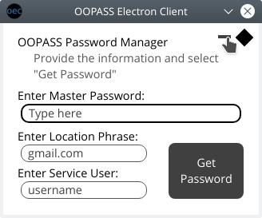

Minimize client
Pressing the button to the left of the settings button will minimize the client. The client will be accessible via the system tray or dock if applicable. The client can be reopened by the key combination CommandOrControl+Shift+2, or by right clicking the client icon and selecting the open option.
